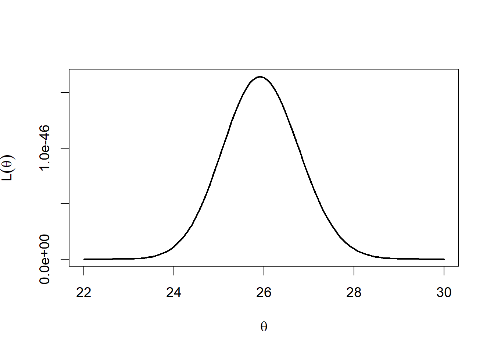
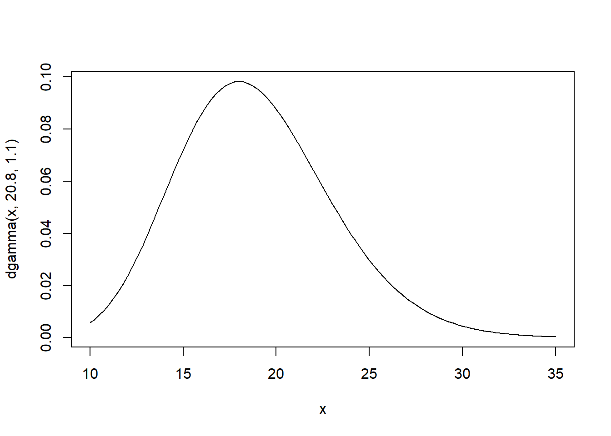
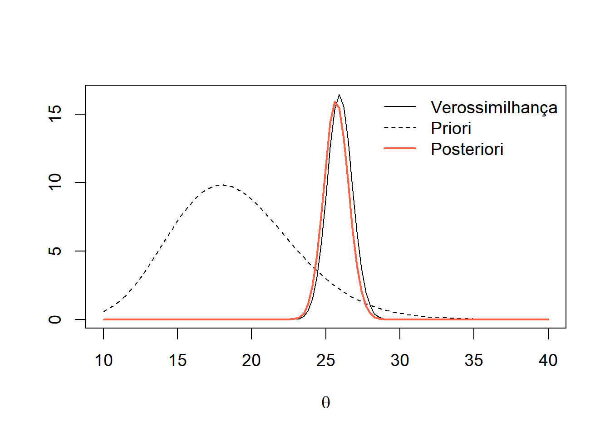

no_suicidios <- c(19, 26, 30, 28, 25, 23,23, 21,
22, 27, 31, 22, 23, 21, 29, 27, 26, 23,
36, 27, 24, 21, 18, 22, 34, 27, 26, 26, 34,
22, 27, 25, 32, 36, 28, 22 )2 Introdução
Os objetivos desta aula são:
- Apresentar a notação
- Explicar sobre as fontes de informação
- Apresentar as inferências básicas
- Discutir como se dá o processo de elicitação de prioris
2.1 Dados que serão utilizados nesse capítulo
A amostra abaixo se refere ao número mensal de suicídios registrados no Amazonas nos anos 2021, 2022 e 2023.
Desta amostra, inferimos que a média mensal é de 25,9 registros e que a variância é 21,05.
2.2 Notação
Variáveis aleatórias cujos valores podem ser observados serão denotadas por letras maiúsculas. Exemplos:
\(X\) é o número de acidentes diários na Avenida Torquato Tapajós
\(Y\) é o nível máximo diário do Rio Negro
Valores observados de variáveis aleatórias serão denotados pela respectiva letra minúscula.
Parâmetros serão considerados aleatórios, mas serão representados por letras gregas minúsculas, como \(\theta\), \(\lambda\), etc.
Vetores aleatórios serão representados por letras em negrito. Exemplos:
\(\mathbf{X} = \{X_1 , \ldots , X_n \}\) é um vetor de variáveis aleatórias.
\(\mathbf{x} = \{x_1 ,\ldots , x_n \}\) é um vetor observado de variáveis aleatórias.
\(\theta=\{\alpha,\beta\}\) é um vetor de parâmetros.
Definition 2.1 O suporte de uma variável aleatória é o conjunto de todos os seus possíveis valores. Quando necessário, o suporte de variáveis aleatórias é representado pela versão caligráfica de sua letra correspondente.
Exemplos: o suporte de \(X\) é \(\mathcal{X}\) ; o suporte de Y é \(\mathcal{Y}\) ; o suporte de \(Z\) é \(\mathcal{Z}\).
Definition 2.2 O espaço paramétrico é o conjunto de todos os possíveis valores do parâmetro. Ele é representado pela versão maiúscula da letra grega utilizada para seu respectivo parâmetro.
Exemplo: o espaço paramétrico do parâmetro \(\theta\) é representado por \(\Theta\).
Tanto a função de densidade quanto a de probabilidade serão denotadas por funções começando com letras minúsculas. Por exemplo,
\[f(x|\lambda)=\lambda e^{-\lambda x}\] onde \(x,\lambda>0\) é a densidade da distribuição exponencial, enquanto que
\[p(x|\lambda)=\frac{e^{-\lambda}\lambda^x}{x!}\] com \(x\in\mathbb{N}\) e \(\lambda >0\) é a função de probabilidade da distribuição Poisson.
2.3 Fontes de informação
2.3.1 A função de verossimilhança
Seja \(\mathbf{x} = \{x_1 , \ldots , x_n \}\) uma amostra observada. Supomos que \(\mathbf{x}\) é uma das possíveis amostras das variáveis aleatórias \(\mathbf{X} = \{X_1 , \ldots , X_n \}\). Supomos ainda que \(X\sim F (.|\theta)\). Assim, condicionada ao conhecimento de \(\theta\), a distribuição da amostra está completamente especificada.
::: {#def-Funcao de verossimilhanca} Para \(\mathbf{x}\) fixado, a função \[L:\Theta\Rightarrow [0,\infty)\] é denominada verossimilhança. :::
Sua interpretação é a seguinte: para \(\theta_1,\theta_2\in\Theta\), se
\[L(\theta_1)>L(\theta_2),\] dizemos que \(\theta_1\) é mais verossímil que \(\theta_2\). Isto porque a probabilidade de observar uma amostra na vizinhança de \(\mathbf{x}\) é maior se considerarmos que \(\theta_1\) é o valor do parâmetro. A verossimilhança é uma das fontes de informação utilizada na inferência bayesiana (e a única fonte da inferência frequentista).
Example 2.1 Seja \(X_i\) o número de suicídios no \(i\)-ésimo mês da amostra e suponha que \(X_1,\ldots,X_{36}\) é uma amostra aleatória proveniente do modelo Poisson(\(\theta\)). Como \(\sum_i x_i=933\), a função de verossimilhança será \[L(\theta)=\prod_{i=1}^{36}\frac{e^{-\theta}\theta^{x_i}}{x_i!}\propto e^{-36\theta}\theta^{933}.\]
A próxima figura mostra os valores da função de verossimilhança para diversos valores de \(\theta\) para a amostra observada.
# função de verossimilhança
vero <- function(q){
sapply ( q, function(q) prod(dpois(no_suicidios, q)) )
}
# gráfico da função de verossimilhança
oo <- par( cex = 1.2)
curve( vero(x),22,30, xlab = expression(theta), ylab = expression( L(theta)) , lwd = 2)
par(oo)Podemos notar que o valores mais verossímeis para \(\theta\) estão entre 24 e 28. Podemos ainda procurar o valor mais verossímil, denominado estimativa de máxima verossimilhança (emv). Pode-se mostrar, utilizando cálculo diferencial, que este valor é equivalente à média amostral. Contudo, com o objetivo de utilizar ao máximo o poder computacional que temos disponível, vamos encontrar esse valor utilizando a função optimize.
# menos o logaritmo da função de verossimilhança
lvero <- function(q) -log( vero(q))
# encontrando a emv:
optimise(lvero, c(24,28))$minimum
[1] 25.91666
$objective
[1] 105.4219O valor 25,9 é a estimativa de verossimilhança. Sob o ponto de vista frequentista, esta seria a nossa estimativa para o valor de \(\theta\).
2.3.2 A distribuição a priori
Sob o ponto de vista bayesiano, a informação existente sobre \(\theta\) antes da observação da amostra deve ser levada em consideração. Isto é feito traduzindo tal informação em termos de probabilidades.
Definition 2.3 A distribuição de \(\theta\) é denominada distribuição a priori.
Os parâmetros da distribuição a priori são denominados hiperparâmetros.
As distribuições a priori agregam o conhecimento sobre parâmetro antes da observação da amostra (tal conhecimento pode pode vir da expertize dos envolvidos ou ter sido gerado de uma amostra prévia).
As prioris podem ser muito ou pouco informativas, dependendo do grau de crença sobre os valores particulares do espaço paramétrico. Em geral isto é feito alterando a variância da distribuição:
\[\hbox{variância}=\frac{1}{\hbox{precisão}}\]
Example 2.2 Nosso objetivo é encontrar uma distribuição a priori para \(\theta\), que representa o número médio de suicídios mensais no Amazonas. Primeiro, vamos obter algumas informações:
Em 2024 foi noticiado que, no Brasil, ocorrem em média 38 suicídios por dia, algo em torno de 1.140 suicídios em um mês.
Para 2024, a população brasileira estava estimada em 212.600.000, enquanto que a população do Amazonas estava estimada em 4.281.209. Portanto, o Amazonas representa, aproximadamente 2% da população brasileira.
Deste modo, pode-se inferir (a priori) que, em média, ocorrem 22,8 suicídios mensais no Amazonas.
Podemos então procurar alguma distribuição a priori que reflita essa informação. Por mera conveniência, vamos escolher \(\theta\sim\hbox{Gama}(a,b)\), onde \(E(\theta)=\frac{a}{b}=22,8.\)
Um especialista em saúde pública poderia argumentar melhor se há motivos para acreditar que essa média deveria ser maior ou não. Como não temos essa informação disponível, podemos refletir esse fato aumentando a variabilidade do modelo. O desvio padrão desta priori é
\[\sqrt{Var(\theta)}=\frac{\sqrt{a}}{b}=\frac{E(\theta)}{\sqrt{a}}=\frac{22,8}{\sqrt{a}}.\]
Vamos escolher esse desvio igual 5. Isto implica que \[a=\left(\frac{22,8}{5}\right)^2=20,8\] e \[b=\frac{22,8}{20,8}=1,1.\] Então, nossa informação a priori está traduzida no modelo Gama(20.8,1.1). Abaixo, apresentamos a função densidade desse modelo. Observe que esse modelo traz informações vagas sobre \(\theta\), permitindo que ele assuma valores entre 10 e 30
curve(dgamma(x,20.8, 1.1), 10,35)
2.3.3 Reunindo as fontes de informação - distribuição a posteriori
Sejam \(f(\boldsymbol{\theta})\) a densidade/função para \(\boldsymbol{\theta}\) e \(L(\boldsymbol{\theta})\) a função de verossimilhança.
Como \(\boldsymbol{\theta}\) é considerado aleatório, podemos analisar sua distribuição após observar a amostra \(\boldsymbol{x}\), ou seja \[\boldsymbol{\theta}|\boldsymbol{x}.\]
Esta distribuição é denominada
::: {#thm-Teorema de Bayes}
Seja \(\boldsymbol{x}\) uma amostra observada. Considere a priori \(\theta\sim f(\theta)\) e a verossimilhança \(L(\theta)\). Então a função de densidade (ou probabilidade) de \(\theta|\boldsymbol{x}\) é dada por \[f(\theta|\boldsymbol{x})=\frac{L(\theta)f(\theta)}{f(\boldsymbol{x})}.\] O denominador é denominado distribuição preditiva, sendo igual a \[f(\boldsymbol{x})=\sum_{\theta\in \Theta}L(\theta)f(\theta),\] se \(\theta\) é v.a. discreta ou \[f(\boldsymbol{x})=\int_{\Theta}L(\theta)f(\theta)d\theta\] se \(\theta\) é v.a. contínua. :::
Example 2.3 Considerando os dados de suicídios do começo desse capítulo, temos as seguintes fontes de informação:
Verossimilhança: \[L(\theta)\propto e^{-36\theta}\theta^{933}\]
Priori \[f(\theta)\propto \theta^{19,8}e^{-1,1\theta}\]
A distribuição a posteriori será
\[f(\theta|x_1,\ldots,x_{36})\propto \theta^{933+19,8}e^{-(36+1,1)\theta}=\theta^{952,8}e^{-37,1\theta}.\] Assim, verificamos que \(\theta|x_1,\ldots,x_{36}\sim\hbox{Gama}(953.8,37.1)\). Na figura abaixo, apresentamos no mesmo gráfico, a função de verossimilhança, priori e posteriori (fazendo as mudanças de escala necessárias). Observe que a priori é mais dispersa que a verossimilhança. Essa, por sua vez, restringe os valores de \(\theta\) que eram prováveis a priori. O resutaldo é uma distribuição a posteriori próxima da função de verossimilhança.

2.4 Inferência estatística
Denominamos por estatística qualquer função da amostra. Utilizamos estatísticas para fazer as seguintes inferências:
Estimação pontual: trata-se de uma estatística com o objetivo de inferir o valor de \(\theta\). Tal estatística é denominada estimador.
Estimação por região: trata-se de uma estatística, digamos \(T(\boldsymbol{X})\), com o objetivo de cobrir o valor de \(\theta\), ou seja, fazer a inferência \(\theta\in T(\boldsymbol{X})\). As estimações intervalares são as mais comuns, nas quais \(T(\boldsymbol{X})=(L(\boldsymbol{X}),U(\boldsymbol{X}))\).
Testes de hipóteses: são estatísticas construídas para decidir se aceitamos a afirmação (hipótese) \(H:\theta\in \Theta_0\), onde \(\Theta_0\) é um subconjunto de \(\Theta\) conhecido por hipótese.
Note que a distribuição a posteriori é função da amostra. Assim, toda função desta distribuição é uma estatística. Assim:
Estimação pontual: em geral é uma medida que representa a região de alta densidade (ou probabilidade) da posteriori. A média da posteriori, assim como a mediana ou a moda são escolhas comuns.
Estimação por regiões: em geral procuramos por uma região \(T\) da posteriori que satisfaça \(P(\theta\in T(\boldsymbol{x})|\boldsymbol{x})=\gamma\), onde \(\gamma\) é denominado nível de credibilidade (não confundir com nível de confiança)
Testes de hipóteses: em geral, aceitamos \(H:\theta\in\Theta_0\) se \(P(H|\boldsymbol{x})\) é elevada.
Example 2.4 Para o nosso exemplo, obtivemos \(\theta|\boldsymbol{x}\sim\hbox{Gama}(953.8,37.1)\). Então, uma estimativa pontual para \(\theta\) é
\[E(\theta|\boldsymbol{x})=\frac{953,8}{37,1}=25,7\] registros de suicídios mensais.
Podemos obter os quantis de 2,5% e 97,5% para construir um intervalo com 95% de credibilidade:
qgamma( c(.025,.975), 953.8, 37.1)[1] 24.10301 27.36583logo, inferimos que \(\theta\in(24.1,27.36)\) com probabilidade 0,95.
Por último, recorde-se que discutimos, utilizando apenas os dados nacionais, que \(\theta\) deveria está próximo de 22,8. Após observa a amostra, existem evidências de que \(H:\theta>22,8\)? Para responder a esse questionamento, podemos calcular
\[P(H|\boldsymbol{x})=P(\theta>22.8|\boldsymbol{x})\]
1-pgamma(22.8, 953.8, 37.1)[1] 0.9998554logo, com uma probabilidade maior que 99,9%, existem fortes evidências de que o número médio mensal de suicídios no Amazonas é maior do que 22,8 registros por mês.
2.5 Exercício
É fato que a taxa de suicídio é maior entre os homens, embora a tentativa seja maior entre as mulheres. Uma das explicações está no fato de que os homens tendem a utilizar métodos mais letais para o suicídio, como armas de fogo, enquanto as mulheres são mais propensas a utilizar métodos menos letais, como overdose de medicamentos.
Dados históricos, entre 1996 e 2017, sugerem que 79% dos suicídios são cometidos por homens.
Seja \(\rho\) a probabilidade de que um suicídio seja cometido por alguém do sexo masculino no Estado do Amazonas. Considere a priori \(\rho\sim\hbox{Beta}(a,b)\), onde sabemos que
\[f(\rho)\propto \rho^{a-1}(1-\rho)^{b-1},\] \[E(\rho)=\frac{a}{a+b},\] e \[Var(\rho)=\frac{E(\rho)(1-E(\rho))}{a+b+1}.\]
Encontre valores de \(a\) e \(b\) que reflitam a média de 0,79 mas que não restrinjam demais os valores possíveis para \(\rho\)
No Amazonas, entre os anos 2021 e 2023, dos 933 registros de suicídios, 726 foram cometidos por homens. Considere então o modelo \(X|\rho\sim\hbox{Binomial}(933,\rho)\). Mostre que \[f(\theta|x)\propto \rho^{726+a-1}(1-\rho)^{207+b-1}\] e conclua que \(\rho|x\sim\hbox{Beta}(a+933,b+207)\).
Estime \(\theta\) e construa um intervalo de 95% de credibilidade
Teste a hipótese de que, para o Amazonas, a probabilidade de um indivíduo do sexo masculino cometer suicídio é maior do que 79%.
Para problemas envolvendo proporções, é comum o uso a priori \(\rho\sim\hbox{Uniforme}(0,1)\), que é equivalente à \(\rho\sim\hbox{Beta}(1,1)\). Refaça este exercício com essa priori e discuta sobre as diferenças encontradas tanto nas estimações quanto no teste de hipóteses.
2.6 Resumo da aula 1
Existem duas fontes de informação na inferência bayesiana: os dados (verossimilhança) e a informação anterior (priori)
A informação a priori é subjetiva: pessoas diferentes têm prioris diferentes
O Teorema de Bayes combina as duas fontes em uma nova informação, dada pela distribuição
Os objetivos da inferência (estimação e testes) são feitos a partir da distribuição a posteriori